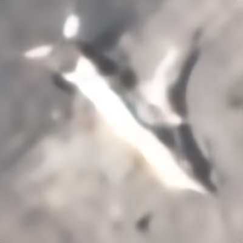
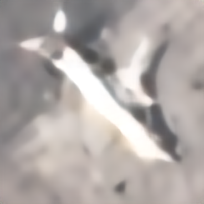
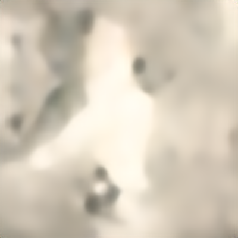
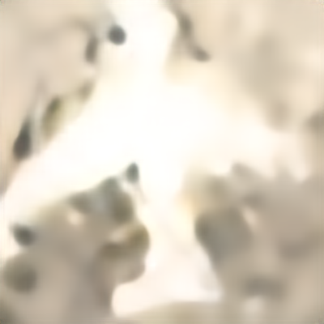
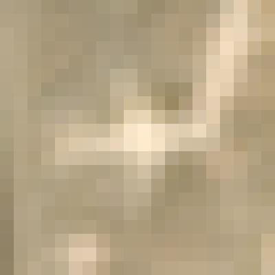
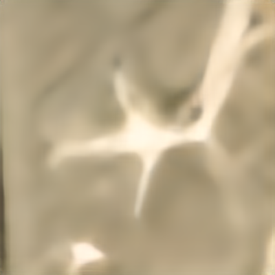
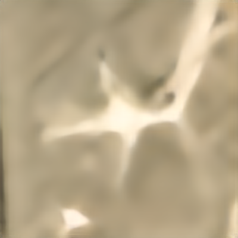
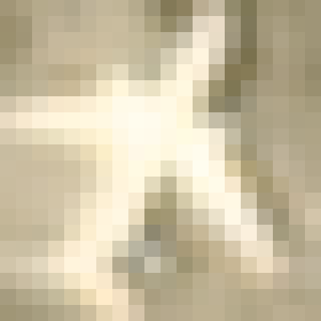
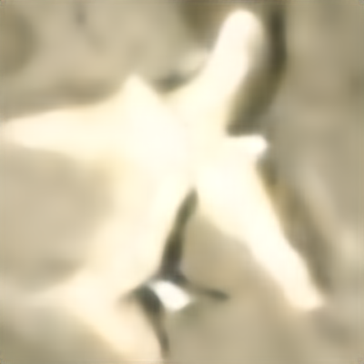

固定飞机样本 24900




两组新模型机身与暗边都更锐；两者差别很小，AI混合组没有出现明确的新细节。
阶段结果 · 2026年9月30日。两组均完成30,000步训练，各测试全部8,000张原生飞机图，共16,000张输出通过逐文件检查。官方CASR两组仍在训练，本页不代表三路线实验已完成。
固定20×20输入 → 20倍超分 → 400×400。下面始终保留同一完整视野；下拉菜单可切换任意两组，拖动滑块比较。
62对留出实拍 × 两种固定退化＝124次评估，按8个场景组等权平均。该测试由高清实拍计算低清输入，和原生PlanesNet不是同一组图片。原生PlanesNet没有配对高清真值，不能用此表声称其细节恢复准确。
| 模型 | 区域PSNR ↑ | 区域SSIM ↑ | 区域LPIPS ↓ | 边缘误差 ↓ | 低频误差 ↓ |
|---|---|---|---|---|---|
| 旧模型对照 | 21.726 | 0.4991 | 0.6099 | 0.02261 | 0.00697 |
| 新重建模型 · 实拍 | 22.003 | 0.5265 | 0.5751 | 0.02286 | 0.00758 |
| 新重建模型 · 实拍＋约10% AI | 22.025 | 0.5253 | 0.5757 | 0.02278 | 0.00741 |
新实拍组比旧模型的区域PSNR提高约0.28 dB、LPIPS降低约5.7%；边缘误差和低频误差略高，提升并不覆盖所有指标。两组都训练满30,000步，按预先约定的验证规则展示第20,000步感知候选，不是拿测试结果挑选权重。
当前证据不足。本轮约10% AI混合组在实拍验证集上的LPIPS相对改善约0.23%，小于预设2%门槛；混合组减实拍组的差值95%场景组自助区间为[-0.00404, +0.00127]，跨过0。测试集LPIPS还略高于纯实拍组，五张图也未见一致明显的新细节。因此保留两组对照，暂不扩大这批AI样本。
这是对本次8张AI高清参考及其64个变体的实验结论，不能推断所有AI扩样都无效。没有通过数值门槛，未将这五张可见标签的目视对比冒充正式盲评，也没有自动替换旧默认模型。


两组新模型机身与暗边都更锐；两者差别很小，AI混合组没有出现明确的新细节。




新模型主机身仍是模糊亮块，两组暗点形状略有不同，没有明显整体改善。



两组都增强了机翼和尾部边界，同时暗斑更显眼；AI混合组并未稳定减轻这些现象。




新模型的细机翼与尾部更容易辨认，两组非常接近；加深的边缘和底部亮块仍不能确认是实际结构。



两组新模型边缘更硬、机翼下方暗块更强，AI混合组尾部暗形略有差别，不能认作真实细节。
约1,673万参数RRDB重建网络，基于RealESRNet预训练权重适配20倍。先20,000步重建训练，再10,000步加入感知损失；实拍组与AI混合组的起点、预算及选模标准相同。高清参考先确定，再计算生成严格配对的低清输入。
实拍训练复用3,499对样本，来自1,185个已标注实例、82个来源组；本轮没有新增独立实拍飞机。旋转、亮度与成像退化增强不算新增独立飞机。AI高清参考是合成来源，不能称为实拍真值，也未确认生成后端为image-2。
五张图用于观察特定飞机，不能代替全体8,000张的观感统计。机翼暗斑、尖角与纹理可能来自模型先验；轮廓变锐不等于真实细节已恢复。旧测试图此前已被观察过，本实验属于探索性研究。